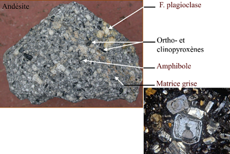
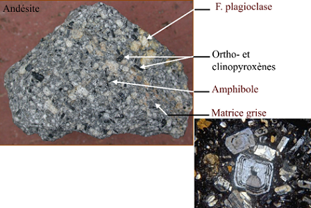

Les roches magmatiques
Les roches magmatiques sont des roches issues de la cristallisation d'un magma. Il en existe deux types :
-
roches extrusives, éruptives ou volcaniques. Elles sont cristallisées
-
lentement en profondeur
-
au moins partiellement rapidement, à la surface terrestre (Basaltes, Trachytes...)
-
roches intrusives ou plutoniques. Elles sont cristallisées dans la croûte terrestre (Granites, Gabbros..)
Le magma est un mélange de solide, de liquide et de gaz.

Variété des roches magmatiques
- roches volcaniques
- roches plutoniques

Critères
Critère sur la coloration

Critère sur le pH

Critère sur la minéralogie
- minéraux blancs tectosilicates : feldspaths, quartz, tridymite, feldspathoïdes
- minéraux colorés ferromagnésiens : olivines, pyroxènes, amphiboles, mica
- minéraux accessoires : oxydes (chromite, magnétite, spinelle, ilménite), sulfures, phosphates (apatites), titanite (sphène)
 


Critère sur la texture
-
texture vitreuse ou hyaline : aucun cristal. Il s'agit d'un verre, matériau amorphe. Les sphérolites sont des minéraux fibreux organisés radialement, signe d'un refroidissement brutal.
-
texture aphanitique : minéraux à l'oeil nu. La roche se présente sous la forme d'une pâte ou "matrice" ou "mésostase" homogène.
-
texture phanéritique : tous les cristaux sont visibles à l'oeil nu. Plusieurs types de textures : grenue, microgrenue, porphyroïde ect..
-
texture porphyrique : cristaux de grande taille, visibles à l'oeil nu, pris dans une matrice. Si les cristaux sont centimétriques à plurocentimétriques, on parle de phénocristaux. Ils sont hérités d'une période de cristallisation en profondeur.
Les conditions de cristallisation vont impacter la vitesse de refroidissement.


Critère sur la forme des cristaux
Les cristaux de plagioclases sont les premiers à apparaître, ils sont automorphes ou sub- automorphes. Les pyroxènes cristallisent en second dans l’espace interstitiel, ils sont xénomorphes.Les cristaux de pyroxènes sont les premiers à apparaître, ils sont automorphes ou sub-automorphes. Les plagioclases cristallisent en second dans l’espace interstitiel, ils sont xénomorphes.
Classifications
Granites: roches plutoniques riches en quartz, qui comportent plus de feldspath alcalin que de plagioclase.
Granitoïdes: roches plutoniques avec plus de 20% de quartz, indépendamment de la nature du ou des feldspaths.
Classification des granites et des granitoïdes sont fait en fonction de la granulométrie et la chimie des roches.
Si on a plus d'aluminium, on aura un excès qui va former des minéraux comme le micas blanc, le grenat, la muscovite.
Si on a un déficit en aluminium :
- magma métalumineux : Na, K et Ca seront en excès, on aura la formation d'amphiboles et de clinopyroxènes.
- magma peralcalin : Ca sera dans les feldspath plagioclases et les alcalins seront en excès, on aura la formation d'amphiboles ou pyroxène sodiques.
Géodynamique et magmatisme


Quand on a toujours une remontée magmatique on a toujours du magma qui reste coincé.
Les dorsales représentent un très grande proportion de ce magmatisme, c'est la principale source. Une grosse partie cristallise en profondeur. On y aura accès par érosion ou rarement par les ophiolites (croûte océanique qui passe au dessus de la croûte continental).